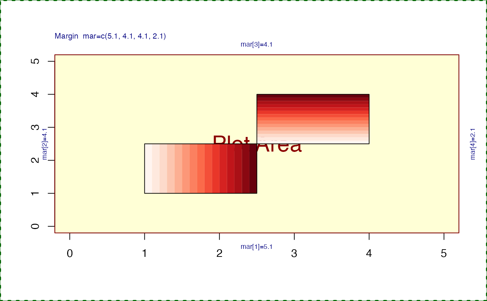

Rectangle with color gradient fill
gradient_rect(
xleft,
ybottom,
xright,
ytop,
col,
gradient = "x",
border = par("fg"),
...
)numeric vectors indicating
the position of sides of a rectangle, passed to
graphics::rect(). Multiple rectangles may be defined.
character vector of colors used to fill the rectangles.
character string indicating the direction of
color gradient, with two allowed values: "x" and "y".
character value indicating the color of border
around the rectangle.
additional arguments are ignored.
This function was inspired by the plotrix::gradient.rect()
function in the plotrix R package. The function is
simplified here, and requires a vector of colors in col.
jamba::nullPlot(xlim=c(0,5), ylim=c(0,5), xaxt="s", yaxt="s");
gradient_rect(xleft=1,
ybottom=1,
xright=2.5,
ytop=2.5,
col=jamba::getColorRamp("Reds", n=15))
gradient_rect(xleft=2.5,
ybottom=2.5,
xright=4,
ytop=4,
gradient="y",
col=jamba::getColorRamp("Reds", n=15))
